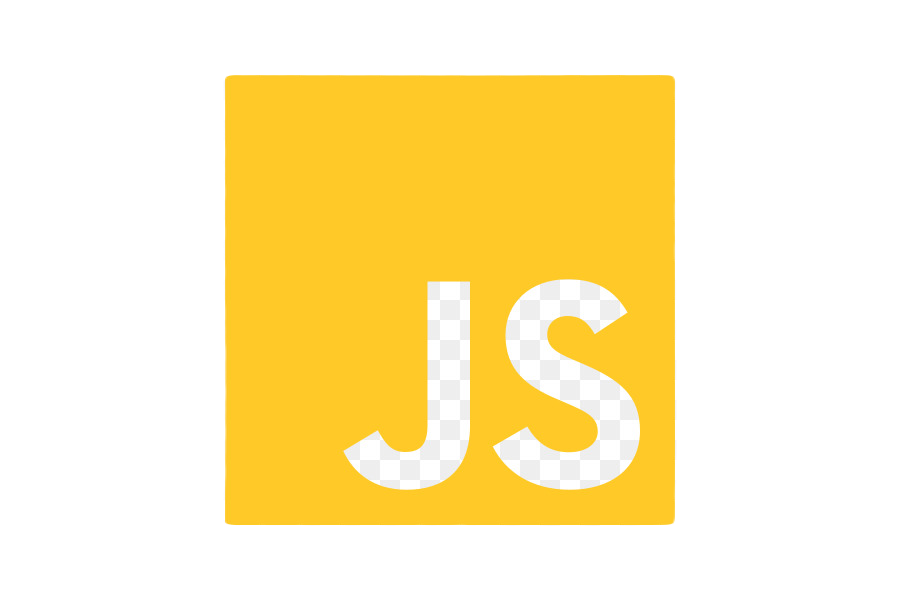
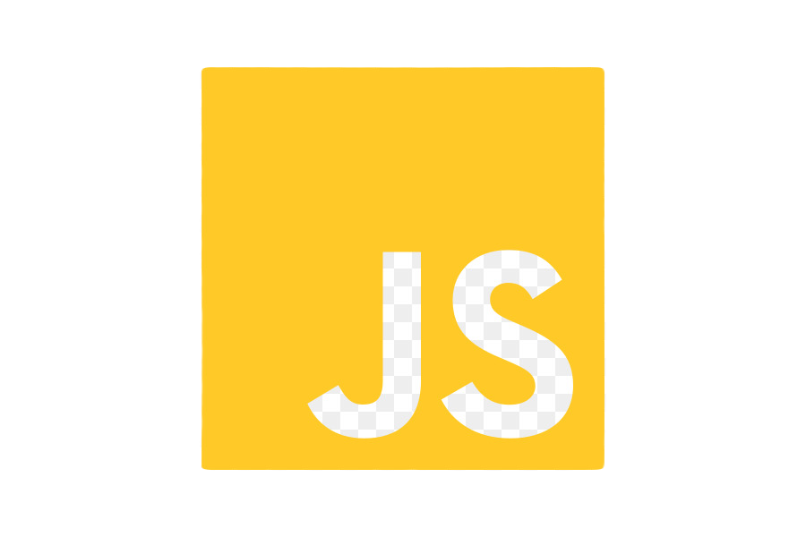
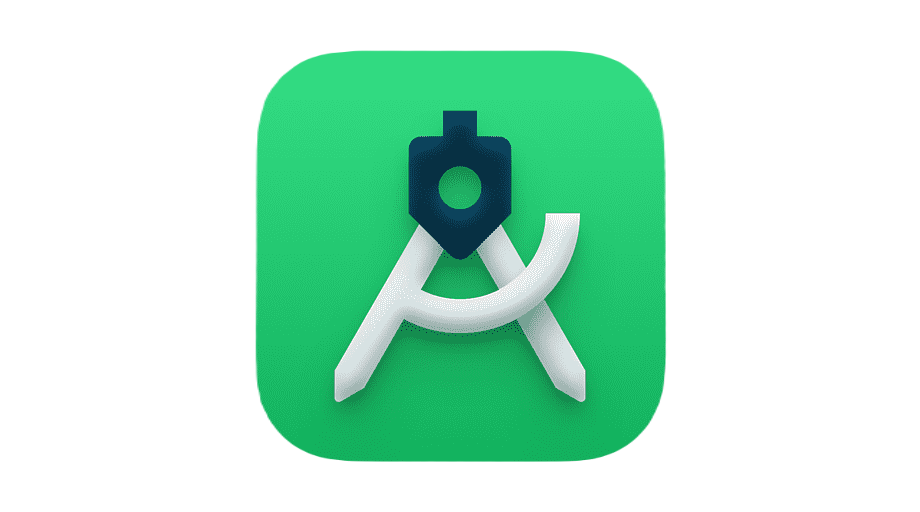
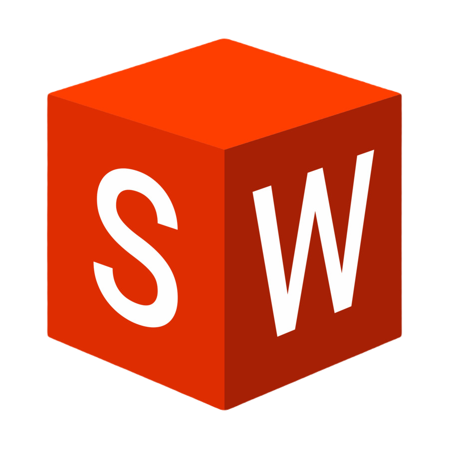

Subsequent to my academic journey, I dedicated a transformative year to working at TRANSCOM, an experience that significantly shaped my professional outlook. This tenure served as a crucible for honing various essential skills, including the cultivation of a more professional demeanor, adept time management, and the enhancement of my collaborative aptitude. Working in the dynamic environment of TRANSCOM, I learned to navigate the intricacies of the professional world with diligence and efficiency. The responsibilities entrusted to me not only demanded a heightened level of professionalism but also necessitated a keen sense of time management, ensuring tasks were not only completed promptly but also with precision. Furthermore, the collaborative nature of the work environment at TRANSCOM enabled me to strengthen my team-working skills, fostering an environment where collective efforts led to successful outcomes. This invaluable experience has not only equipped me with a pragmatic understanding of the industry but has also ingrained in me the importance of adaptability, teamwork, and maintaining a high standard of professionalism in all aspects of my work. I am eager to carry forward these lessons into my future endeavors, both academic and professional.
In the culminating year of my studies at ISSAT, I undertook a transformative internship at STEG, a period that proved to be a pivotal juncture in my professional development. Engaging in challenging tasks and collaborating with seasoned professionals, I gained firsthand experience in [mention the focus of your internship, e.g., electrical engineering, power systems, etc.]. As part of my Projet de Fin d'Études (PFE), I had the privilege of leading a project that resulted in the development of a fully functional grind belt machine. This hands-on endeavor not only allowed me to apply the theoretical knowledge acquired throughout my academic journey but also honed my skills in project planning, execution, and troubleshooting. The internship at STEG not only deepened my understanding of the industry but also instilled in me a profound sense of responsibility and commitment to delivering high-quality engineering solutions. I am excited to leverage this comprehensive experience as I continue to pursue excellence in my academic and professional pursuits.
During my second year at ISSAT, I had the invaluable opportunity to undertake an enriching internship at Figeac Aero. This experience not only broadened my horizons but also provided me with practical insights into the realm of [mention your field or department]. Throughout the internship, I engaged in a project that involved working closely with CNC machines, allowing me to develop a profound understanding of their operation and functionality. The dynamic working environment at Figeac Aero exposed me to the intricacies of the aerospace industry, enhancing my adaptability and problem-solving skills. Additionally, I honed my proficiency in utilizing Excel for data analysis and project management, a skill set that I believe is crucial in any professional setting. This internship not only solidified my academic knowledge but also equipped me with real-world experiences that I am eager to apply and expand upon in my ongoing studies and future career endeavors.
Programming language
 


 

Professionally adept and technically versatile, I possess a comprehensive skill set that spans various domains. My proficiency in web development includes expertise in HTML, CSS, and JavaScript, enabling me to craft interactive and visually appealing websites. On the programming front, I am adept in languages such as C, Python, and MATLAB, with a demonstrated ability to develop efficient and robust algorithms. In the realm of computer-aided design (CAD), my skills extend to Catia and SolidWorks, allowing me to conceptualize and engineer intricate designs with precision. Additionally, I am well-versed in Android Studio, showcasing my ability to develop applications for the Android platform. This amalgamation of skills not only reflects my commitment to staying abreast of technological advancements but also positions me as a versatile professional capable of contributing across a spectrum of projects and disciplines. I am eager to leverage this diverse skill set in innovative ways to contribute to and excel in dynamic work environments.